해외선물 - 눌림목 공략
오늘은 금요일
오전 5시7분에 도날드 트럼프가 다보스 포름에서 짖어댈 예정이고 5시30분에 공장재주문 지표가 발표될 예정이었음
하지만 예상대로 크게 놀라운 사건은 없었기에 장은 그야말로 쥐죽은듯 고요했음
일봉상으로 보면 완전한 Narrow range bar가 되어있음
다른날 캔들의 반토막도 안되는 움직이지 않는 장
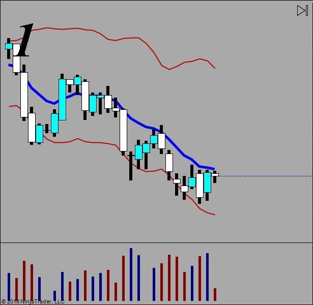
월봉이나 주봉상으로 완벽한 하락장세지만 이번주 내내 하락을 하다 basin을 만들고 일단 멈춰서있는 상황인데
일봉상으로 이평선에 헤딩하고 백퍼 하락할 기세임
그런데 금욜이라 거래량도 별로없고 재료도 없어서 박스권 안에서 죽도록 횡보중
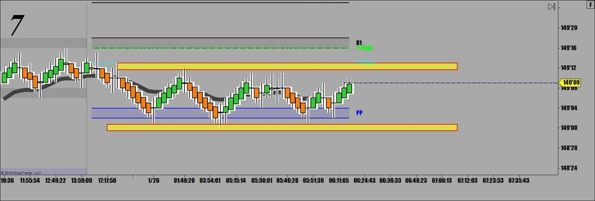
노란선으로 표시된 오늘의 고점 저점으로 만들어진 박스안에서 웰시코기 다리만큼씩 움직이고 있음
그렇게 된 이유가 바로 큰차트로 보면 똭!! 하고 나옴
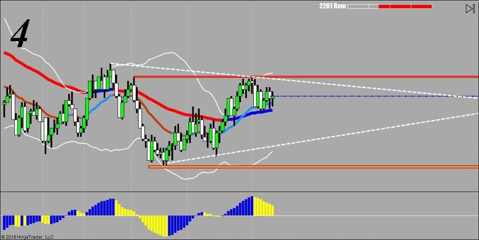
중요한 지지/저항선 사이에 낑가가꼬 숨고르기를 하고 있는 상황
오늘 일봉상 거의 백퍼 하방으로 무너질 가능성이 있는 상황인지라 일단 매매를 중단하고 지지선 뽀사지는걸 기다림
항상 강조하지만 선물매매에서 돌파할 때 따라들어가면 디질 확률이 50%임
기관들이 개미들 꼬셔서 털어먹을때 중요 지지/저항을 큰 물량으로 갑자기 확 깨뜨림
그러면 돌파하나보다 광분한 왕초보 개미들이 와~ 달라붙으면 순식간에 반대로 틀어버려서 손절 오더 다 따묵고 반대로 감
다시한번 강조하지만 지지(저항)돌파매매는 개허접한 왕초보 매매임
절대 하지말 것.
고수매매기법은
일단 중요 지지/저항선을 돌파하면 거래량 확인하고 일차 조정이 들어올 때 그때 그 눌림목을 공략해야 함
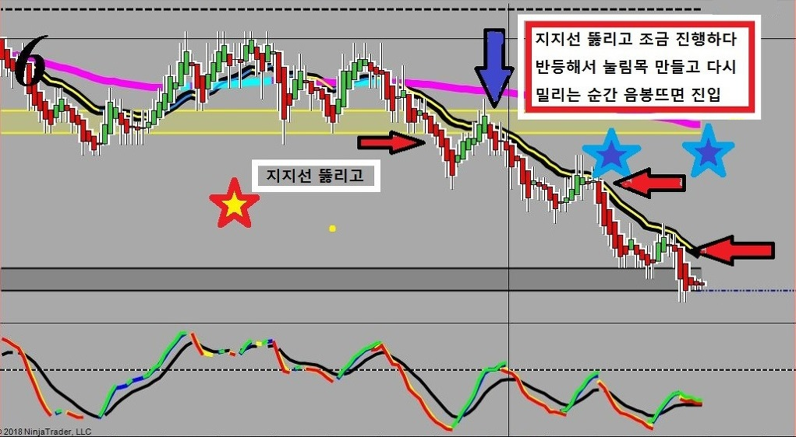
위에 Tick 차트로 보면 억수로 복잡하지만 매매신호차트로 보면
눌림목 만들고 색깔 바뀔 때 들어가면 됨
매매차트는 급식충이 봐도 매매할 수 있을 정도로 쉬워야 함.
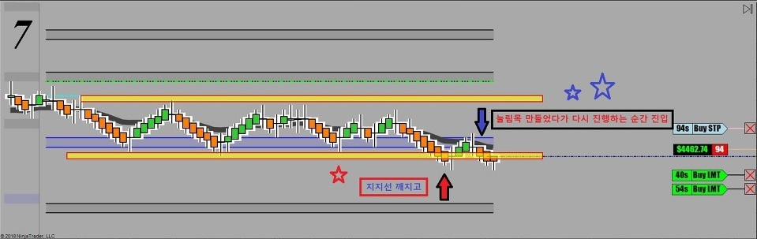
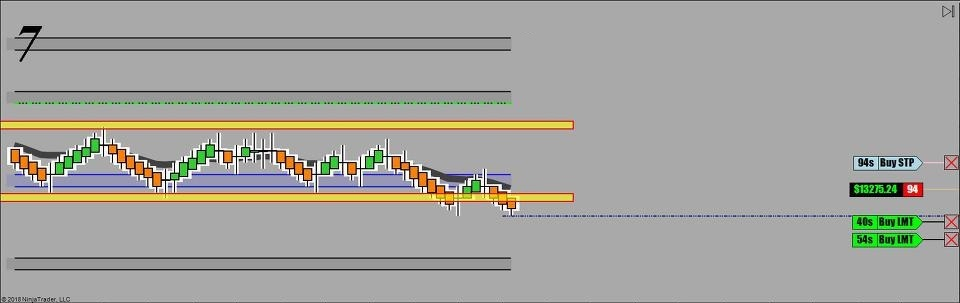
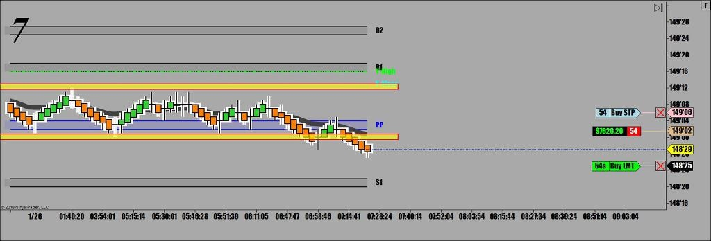
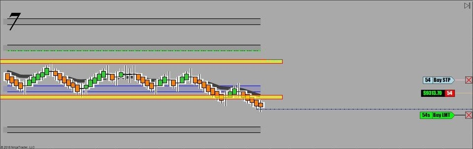
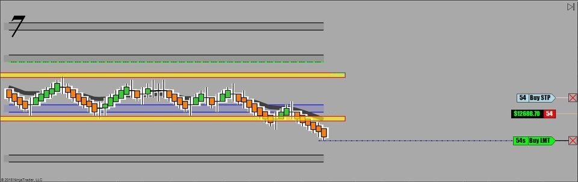
백퍼 확실한 자리라서 물량 실어서 돌격!!!
50 lot씩 둘로 나눠서 주문을 냈는데 94 Lot이 걸림..힝
먼저 일차 익절에서 40 Lot 털고 나머지는 tick 차트상의 추세선 만나는 지점인 148.26 에 매수주문을 내놓고
기다렸는데 한 번 더 반등하다가 결국 한참만에 청산 됨
오늘의 매매 Tip
횡보장에선 콧구멍 후비면서 무조건 기다려야 함
중요 지지 저항이 무너지면 일단 거래량이 터졌는지 확인하고 반등하길 기다려 일차 눌림목에서 들어가야 함
익절은 항상 다음번 낙하지점을 정확히 계산해야 함
익절 포인트
대부분의 경우
중요 지지/저항선, 어제 오늘 고점 저점을 이어놓은 추세선 ,어제 고점, 어제 저점, 어제 종가, 오늘 고점, 오늘 저점임
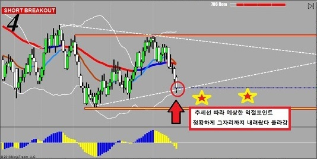
오늘 매매 정리
횡보장에서 기다리다가 지지선 뚫린 후 일차 반등에서 눌림목 공략 성공함 1전 1승
오늘 매매기법
1차 매매 - 눌림목 공략- 성공
오늘 순수익 - 20,062불 50전
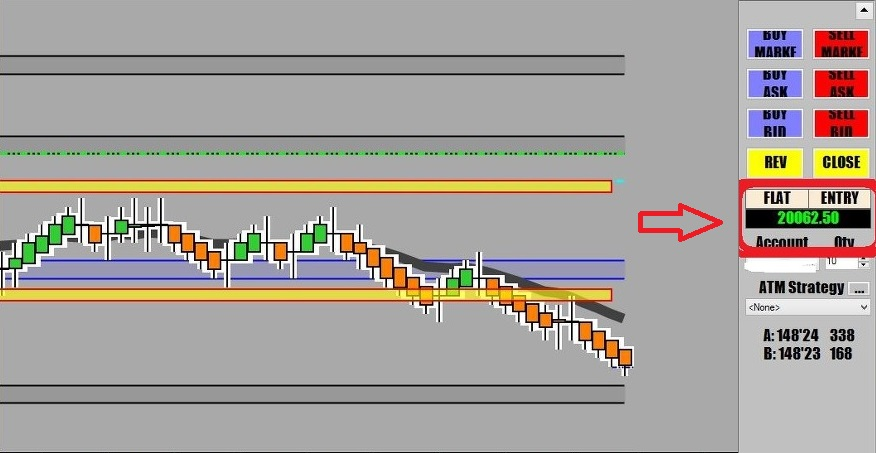